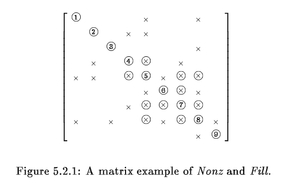
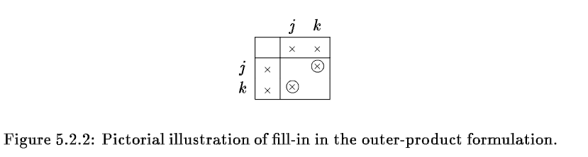
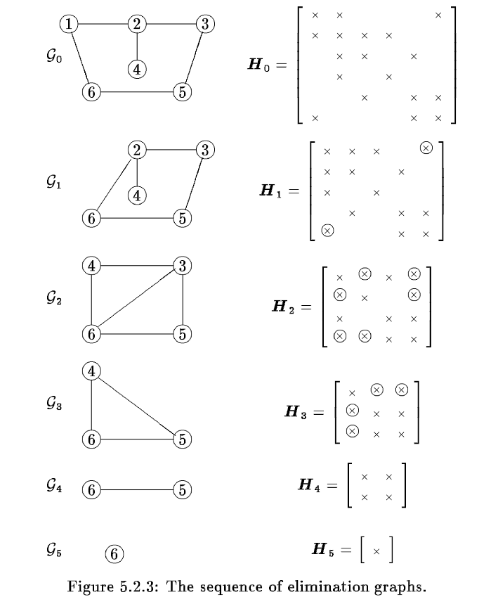
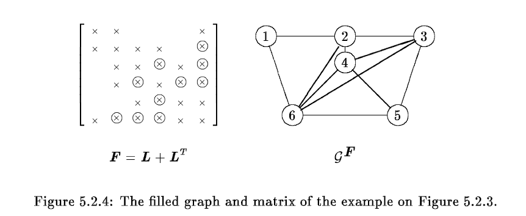
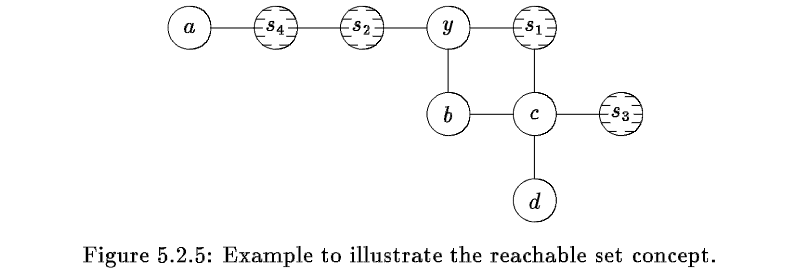
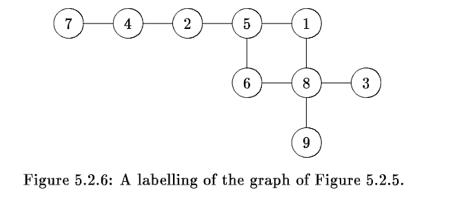
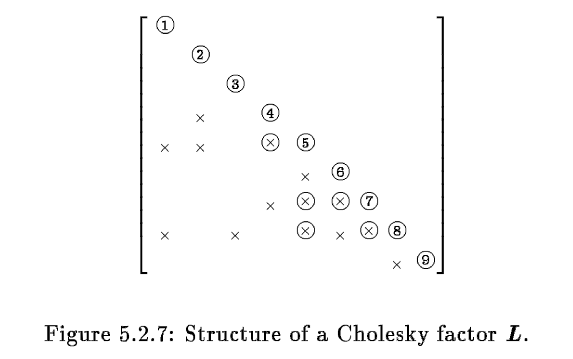
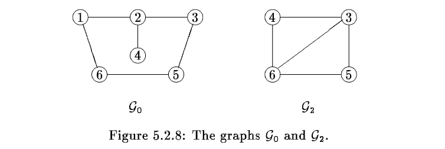

<!DOCTYPE html>


<html lang="zh-CN">


<head>
  <meta name="baidu-site-verification" content="codeva-NSg7ynviLa" />
  <meta charset="utf-8" />
    
  <meta name="viewport" content="width=device-width, initial-scale=1, maximum-scale=1" />
  <title>
    稀疏矩阵算法最小度数算法一之消元图 |  
  </title>
  <meta name="generator" content="hexo-theme-ayer">
  
  <link rel="shortcut icon" href="/images/mojie.jpg" />
  
  
<link rel="stylesheet" href="/dist/main.css">

  <link rel="stylesheet" href="https://cdn.jsdelivr.net/gh/Shen-Yu/cdn/css/remixicon.min.css">
  
<link rel="stylesheet" href="/css/custom.css">

  
  <script src="https://cdn.jsdelivr.net/npm/pace-js@1.0.2/pace.min.js"></script>
  
  

  

<link rel="alternate" href="/atom.xml" title="null" type="application/atom+xml">
</head>

</html>

<body>
  <div id="app">
    
      
    <main class="content on">
      <section class="outer">
  <article
  id="post-稀疏矩阵算法最小度数算法一之消元图"
  class="article article-type-post"
  itemscope
  itemprop="blogPost"
  data-scroll-reveal
>
  <div class="article-inner">
    
    <header class="article-header">
       
<h1 class="article-title sea-center" style="border-left:0" itemprop="name">
  稀疏矩阵算法最小度数算法一之消元图
</h1>
 

    </header>
     
    <div class="article-meta">
      <a href="/posts/9b2dddf7/" class="article-date">
  <time datetime="2022-09-25T08:41:43.000Z" itemprop="datePublished">2022-09-25</time>
</a> 
  <div class="article-category">
    <a class="article-category-link" href="/categories/%E7%90%86%E8%AE%BA%E5%AD%A6%E4%B9%A0/">理论学习</a> / <a class="article-category-link" href="/categories/%E7%90%86%E8%AE%BA%E5%AD%A6%E4%B9%A0/%E7%A8%80%E7%96%8F%E7%9F%A9%E9%98%B5/">稀疏矩阵</a>
  </div>
  
<div class="word_count">
    <span class="post-time">
        <span class="post-meta-item-icon">
            <i class="ri-quill-pen-line"></i>
            <span class="post-meta-item-text"> 字数统计:</span>
            <span class="post-count">3.2k</span>
        </span>
    </span>

    <span class="post-time">
        &nbsp; | &nbsp;
        <span class="post-meta-item-icon">
            <i class="ri-book-open-line"></i>
            <span class="post-meta-item-text"> 阅读时长≈</span>
            <span class="post-count">15 分钟</span>
        </span>
    </span>
</div>
 
    </div>
      
    <div class="tocbot"></div>


  
    <div class="article-entry" itemprop="articleBody">
       
  <p>本章节介绍 <em>the minimum degree algorithm</em> ，我个人将其翻译为最小度数算法，我们这里看消元图的理论基础。</p>
<span id="more"></span>
<p>在这一章节中我们研究的排序算法称为 <strong><em>minimum degree algorithm</em></strong> (Rose) ，这是一个启发式算法，用于对 <span class="math inline">\(\mathbf{A}\)</span> 排序减少其分解时产生的 <code>fill-in</code> 数目。</p>
<h1 id="cholesky-分解">Cholesky 分解</h1>
<p>设 <span class="math inline">\(\mathbf{A}\)</span> 是一个对称稀疏矩阵，其中的<strong>非零结构</strong> (<em>nonzero structure</em>) 定义为
<span class="math display">\[
Nonz(\mathbf{A}) = \{ \{ i,j \} \mid a_{ij} \neq 0 \text{ and } i \neq j \}
\]</span>
假设 <span class="math inline">\(\mathbf{A}\)</span> 分解为 <span class="math inline">\(\mathbf{LL^{T}}\)</span> ，而 <em>filled matrix</em> <span class="math inline">\(\mathbf{F(A)＝L+L^{T}}\)</span>，下文中我们用 <span class="math inline">\(\mathbf{F}\)</span> 替换 <span class="math inline">\(\mathbf{F(A)}\)</span> ，其相应的非零结构为
<span class="math display">\[
Nonz(\mathbf{F}) = \{ \{ i,j \} \mid l_{ij} \neq 0 \text{ and } i \neq j \}
\]</span>
在本文中，<strong>我们假设精确的数值消除并不存在</strong>（就是说任意两个浮点数相减不能得到0），因此对于一个给定的非零结构 <span class="math inline">\(Nonz(\mathbf{A})\)</span>，其相应的 <span class="math inline">\(Nonz(\mathbf{F})\)</span> 的结构就能完全确定。</p>
<p>这个假设立刻推导出
<span class="math display">\[
Nonz(\mathbf{A}) \subset Nonz(\mathbf{F})
\]</span>
矩阵 <span class="math inline">\(\mathbf{A}\)</span> 的 <em>fill</em> 可以定义为
<span class="math display">\[
Fill(\mathbf{A}) = Nonz(\mathbf{F}) - Nonz(\mathbf{A})
\]</span>
举个例子，假设存在下图中的矩阵，其中的 <em>fill-in</em> 用加号表示，其相应的集合为

$$
\begin{aligned}
\operatorname{Nonz}(\boldsymbol{A}) &=\{\{1,5\},\{1,8\},\{2,4\},\{2,5\},\{3,8\},\{4,7\},\{5,6\},\{6,8\},\{8,9\}\} \\
\operatorname{Fill}(\boldsymbol{A}) &=\{\{4,5\},\{5,7\},\{5,8\},\{6,7\},\{7,8\}\} .
\end{aligned}
$$

</p>
<h2 id="elimation-graph-model">Elimation Graph Model</h2>
<p>我们现在联系 <span class="math inline">\(\mathbf{A}\)</span> 的高斯消元，与相应的图 <span class="math inline">\(\mathcal{G}^{\mathbf{A}}\)</span> 的变化。我们回顾一下分解的 <em>outer product form</em> ，第一步为

$$
\begin{aligned}
\boldsymbol{A} &=\boldsymbol{A}_{0}=\boldsymbol{H}_{0}=\left(\begin{array}{cc}
d_{1} & \boldsymbol{v}_{1}^{T} \\
\boldsymbol{v}_{1} & \overline{\boldsymbol{H}}_{1}
\end{array}\right) \\
&=\left(\begin{array}{cc}
\sqrt{d_{1}} & \mathbf{0} \\
\frac{\boldsymbol{v}_{1}}{\sqrt{d_{1}}} & \boldsymbol{I}_{n-1}
\end{array}\right)\left(\begin{array}{cc}
1 & \mathbf{0} \\
\mathbf{0} & \boldsymbol{H}_{1}
\end{array}\right)\left(\begin{array}{cc}
\sqrt{d_{1}} & \frac{\boldsymbol{v}_{1}^{T}}{\sqrt{d_{1}}} \\
\mathbf{0} & \boldsymbol{I}_{n-1}
\end{array}\right) \\
&=\boldsymbol{L}_{1} \boldsymbol{A}_{1} \boldsymbol{L}_{1}^{T},
\end{aligned}
$$

其中

$$
\boldsymbol{H}_{1}=\overline{\boldsymbol{H}}_{1}-\frac{\boldsymbol{v}_{1} \boldsymbol{v}_{1}^{T}}{d_{1}}
$$

这一步会递归地应用于  $\mathbf{H}_{1}$， $\mathbf{H}_{2}$  等。由于我们假设不存在精准的消除，因此根据上面的公式，如果 <span class="math inline">\(\mathbf{\bar{H}_{1}}\)</span> 中的 <span class="math inline">\(\{j,k\}\)</span> 元素不为0，或者 <span class="math inline">\((v_{1})_{j} \neq 0 \text{ and } (v_{1})_{k} \neq 0\)</span> ，<span class="math inline">\(\mathbf{H}_{1}\)</span> 矩阵的 <span class="math inline">\(\{j,k\}\)</span> 元素才不为0。当第一个条件不成立，而第二个条件成立时，便产生了 <em>fill-in</em> 。下图中展示了这个情况</p>
<p>　</p>
<p>当第一步分解完成之后，我们对 <span class="math inline">\(\mathbf{H}_{1}\)</span> 矩阵继续进行分解。</p>
<p>现在我们看从 <span class="math inline">\(\mathbf{H}_{0}\)</span> 到 <span class="math inline">\(\mathbf{H}_{1}\)</span> 的转变过程中，其相应的图从 <span class="math inline">\(\mathcal{G}^{\mathbf{H}_{0}}\)</span> 到 <span class="math inline">\(\mathcal{G}^{\mathbf{H}_{1}}\)</span>的变化，下图是一个例子。生成图 <span class="math inline">\(\mathcal{G}^{\mathbf{H}_{1}}\)</span>的过程如下</p>
<ol type="1">
<li>删除节点 <span class="math inline">\(x_{1}\)</span> 及其相应的边</li>
<li>添加边，使得图 <span class="math inline">\(\mathcal{G}^{\mathbf{H}_{1}}\)</span>中的 <span class="math inline">\(Adj(x_{1})\)</span> 彼此之间相邻</li>
</ol>
<p>　</p>
<p>因此，就像 Rose 观察到的，对称矩阵的高斯消元（上面的 <span class="math inline">\(\mathbf{H}_{1}\)</span>， <span class="math inline">\(\mathbf{H}_{2}\)</span> 等其实也一样就是高斯消元的结果 ）可以理解为生成一系列 <em>elimination graphs</em>
<span class="math display">\[
\mathcal{G}_{i}^{\alpha}=\mathcal{G}^{\boldsymbol{H}_{i}}=\left(X_{i}^{\alpha}, E_{i}^{\alpha}\right), \quad i=1,2, \cdots, n-1
\]</span>
其中 <span class="math inline">\(\mathcal{G}_{i}^{\alpha}\)</span> 是从 <span class="math inline">\(\mathcal{G}_{i-1}^{\alpha}\)</span> 中得到的，过程就和上面描述的一样。这里 <span class="math inline">\(\alpha\)</span> 是所有节点的标签，当我们已知所有节点的标签时，我们用标记 <span class="math inline">\(\mathcal{G}_{i}\)</span> 替换 <span class="math inline">\(\mathcal{G}_{i}^{\alpha}\)</span> 。在上图的消元过程，比如从 <span class="math inline">\(\mathcal{G}_{1}\)</span> 消除 <span class="math inline">\(x_{2}\)</span> 的过程中，产生了三个 <em>fill-in</em> 的边 <span class="math inline">\(\{x_{3}, x_{4}\}, \{x_{3}, x_{6}\}, \{x_{4}, x_{6}\}\)</span> 。</p>
<p>设 <span class="math inline">\(\mathbf{L}\)</span> 是 <span class="math inline">\(\mathbf{A}\)</span> 的分解因子，定义 <span class="math inline">\(\mathcal{G}^{\mathbf{A}}\)</span>的 <em>filled graph</em> 为 <span class="math inline">\(\mathcal{G}^{\mathbf{F}} = (X^{\mathbf{F}},E^{\mathbf{F}})\)</span> ，其中 <span class="math inline">\(\mathbf{F = L + L^{T}}\)</span> 。这里所有边的集合 <span class="math inline">\(E^{\mathbf{F}}\)</span>包含了 <span class="math inline">\(E^{\mathbf{A}}\)</span> 中的所有边，加上分解过程中新增的边。</p>
<p><span class="math inline">\(E^{\mathbf{F}}\)</span> 和 <span class="math inline">\(E^{\mathbf{A}}\)</span> 的关系存在以下引理 (Parter)</p>
<p><strong>引理</strong>：当且仅当 <span class="math inline">\(\{ x_{i}, x_{j}\} \in E^{\mathbf{A}}\)</span>，或者 <span class="math inline">\(\{ x_{i}, x_{k}\} \in E^{\mathbf{F}}\)</span> and <span class="math inline">\(\{ x_{k}, x_{j}\} \in E^{\mathbf{F}}\)</span> for some <span class="math inline">\(k &lt; \min\{i,j\}\)</span> ，才满足 <span class="math inline">\(\{ x_{i}, x_{j}\} \in E^{\mathbf{F}}\)</span></p>
<p>根据这个引理，上图中得到的 <span class="math inline">\(\mathcal{G}^{\mathbf{F}}\)</span> 如下。发现了 <span class="math inline">\(\mathcal{G}^{\mathbf{F}}\)</span> ，我们就可以得到 <span class="math inline">\(\mathbf{L}\)</span> 矩阵的结构。</p>
<p>　</p>
<h2 id="modelling-elimination-by-reachable-sets">Modelling Elimination By Reachable Sets</h2>
<p>上面的章节中定义了 <em>elimination graphs</em> 的序列
<span class="math display">\[
\mathcal{G}_{0} \rightarrow \mathcal{G}_{1} \rightarrow \cdots \rightarrow \mathcal{G}_{n-1}
\]</span>
然后提供了一种递归的方式来确认 <span class="math inline">\(E^{\mathbf{F}}\)</span> ，我们这一章节的目标是采用 <strong><em>reachable sets</em></strong> 的概念来确认这些步骤。</p>
<p>让我们首先研究在上图中 <em>fill edge</em> <span class="math inline">\(\{ x_{4}, x_{6} \}\)</span> 的形成过程。在 <span class="math inline">\(\mathcal{G}_{1}\)</span> ，存在路径：
<span class="math display">\[
(x_{4}, x_{2}, x_{6})
\]</span>
因此当 <span class="math inline">\(x_{2}\)</span> 被消除，被创建了 <span class="math inline">\(\{ x_{4}, x_{6} \}\)</span> 这条边。然而，<span class="math inline">\(\{ x_{2}, x_{6} \}\)</span> 并不在原始的图中，这条边是由于路径 <span class="math inline">\((x_{2}, x_{1}, x_{6})\)</span> 中的 <span class="math inline">\(x_{1}\)</span> 从 <span class="math inline">\(\mathcal{G}_{0}\)</span> 中消除而创建得到的。</p>
<p>联合这两个，我们得到 <span class="math inline">\(\mathcal{G}_{0}\)</span> 中的路径 <span class="math inline">\((x_{4}, x_{2}, x_{1}, x_{6})\)</span> 才是生成 <em>fill edge</em> <span class="math inline">\(\{ x_{4}, x_{6} \}\)</span> 的真正原因，因此我们引入 <strong><em>reachable sets</em></strong> 的概念。</p>
<p>设 <span class="math inline">\(S\)</span> 是节点集合的一个真子集，<span class="math inline">\(x \notin S\)</span> 。如果存在一个从 y 到 x 的路径 <span class="math inline">\((y, v_{1}, \cdots, v_{k},x)\)</span> ，其中 <span class="math inline">\(v_{i} \in S, 1 \leq i \leq k, k \geq 0\)</span>，则我们称节点 <span class="math inline">\(x\)</span> 是 <em>be reachable from a node <span class="math inline">\(y\)</span> through <span class="math inline">\(S\)</span></em> ，注意由于 <span class="math inline">\(k\)</span> 可以为 0，因此 <span class="math inline">\(y\)</span> 的任何不在 <span class="math inline">\(S\)</span> 中的相邻节点均 <em>be reachable from <span class="math inline">\(y\)</span> through <span class="math inline">\(S\)</span></em></p>
<p>这些节点的集合就是 <em>reachable set of y through S</em> ，标记为 <span class="math inline">\(Reach(y, S)\)</span> ，定义为
<span class="math display">\[
\operatorname{Reach}(y, S)=\{x \notin S \mid x \text { is reachable from } y \text { through } S\} .
\]</span>
为了说明 <em>reachable set</em> 的概念，以下图为例，如果 <span class="math inline">\(S = \{s_{1}, s_{2},s_{3},s_{4}\}\)</span> ，我们有
<span class="math display">\[
\operatorname{Reach}(y, S)=\{ a,b,c\}
\]</span>
　因为存在以下路径 <span class="math inline">\(\{y,s_{2},s_{4},a\}\)</span>，<span class="math inline">\(\{y,b\}\)</span>，<span class="math inline">\(\{y,s_{1},c\}\)</span></p>
<p></p>
<p>下面的定理说明通过 <em>reachable set</em> 来创建的 <em>filled graph</em></p>
<p><strong>定理</strong>：
<span class="math display">\[
E^{\boldsymbol{F}}=\left\{\left\{x_{i}, x_{j}\right\} \mid x_{j} \in \operatorname{Reach}\left(x_{i},\left\{x_{1}, x_{2}, \cdots, x_{i-1}\right\}\right)\right\} .
\]</span>
证明：假设 <span class="math inline">\(x_{j} \in \operatorname{Reach}\left(x_{i},\left\{x_{1}, x_{2}, \cdots, x_{i-1}\right\}\right)\)</span> ，根据定义，在 <span class="math inline">\(\mathcal{G}_{0}\)</span> 中存在一条路径 <span class="math inline">\((x_{i},y_{1},\cdots, y_{t},x_{j})\)</span> ，其中 <span class="math inline">\(y_{k} \in \left\{x_{1}, x_{2}, \cdots, x_{i-1}\right\}\)</span> 。如果 <span class="math inline">\(t = 0\)</span> 或者 <span class="math inline">\(t = 1\)</span> ，根据上面的引理就可以直接得到 <span class="math inline">\(\left\{x_{i}, x_{j}\right\} \in E^{\mathbf{F}}\)</span>。如果 <span class="math inline">\(t &gt; 1\)</span> ，我们可以从 <span class="math inline">\(y_{1},\cdots, y_{t}\)</span> 中逐渐消除节点，使得 <span class="math inline">\(t = 0\)</span> ，从而得到 <span class="math inline">\(\left\{x_{i}, x_{j}\right\} \in E^{\mathbf{F}}\)</span>。</p>
<p>反过来，假设 <span class="math inline">\(\left\{x_{i}, x_{j}\right\} \in E^{\mathbf{F}}\)</span> ，并且 <span class="math inline">\(i \leq j\)</span> 。根据前面的推理，则 <span class="math inline">\(\{ x_{i}, x_{j}\} \in E^{\mathbf{A}}\)</span>，或者 <span class="math inline">\(\{ x_{i}, x_{k}\} \in E^{\mathbf{F}}\)</span> and <span class="math inline">\(\{ x_{k}, x_{j}\} \in E^{\mathbf{F}}\)</span> for some <span class="math inline">\(k &lt; \min\{i,j\}\)</span> 。如果是满足第一个条件 <span class="math inline">\(\{ x_{i}, x_{j}\} \in E^{\mathbf{A}}\)</span>，则 <span class="math inline">\(x_{j} \in \operatorname{Reach}\left(x_{i},\left\{x_{1}, x_{2}, \cdots, x_{i-1}\right\}\right)\)</span> 成立；如果是满足第二个条件，即 <span class="math inline">\(\{ x_{i}, x_{k}\} \in E^{\mathbf{F}}\)</span> and <span class="math inline">\(\{ x_{k}, x_{j}\} \in E^{\mathbf{F}}\)</span> for some <span class="math inline">\(k &lt; \min\{i,j\}\)</span> ，这说明在 <span class="math inline">\(\mathcal{G}_{0}\)</span> 中 <span class="math inline">\(x_{i}\)</span> 和 <span class="math inline">\(x_{k}\)</span>， <span class="math inline">\(x_{k}\)</span> 和 <span class="math inline">\(x_{j}\)</span> 均存在一条路径连接，二者可以连通起来，说明 存在某条通过 <span class="math inline">\(x_{k}\)</span> 连接 <span class="math inline">\(x_{i}\)</span> 和 <span class="math inline">\(x_{j}\)</span> 的路径 <span class="math inline">\((x_{i},x_{k},x_{j})\)</span> ，因此 <span class="math inline">\(x_{j} \in \operatorname{Reach}\left(x_{i},\left\{x_{1}, x_{2}, \cdots, x_{i-1}\right\}\right)\)</span> 成立。</p>
<p>证明完毕。</p>
<p>采用矩阵的术语，<span class="math inline">\(\operatorname{Reach}\left(x_{i},\left\{x_{1}, x_{2}, \cdots, x_{i-1}\right\}\right)\)</span> 就是在列向量 <span class="math inline">\(\mathbf{L}_{*i}\)</span> 中的非零元素的行号。举个例子，假设上图 5.2.5 中的图排序如下</p>
<p></p>
<p>如果 <span class="math inline">\(S_{i} = \left\{x_{1}, x_{2}, \cdots, x_{i-1}\right\}\)</span> ，根据上面的定理，我们可以轻松得到下面的 <em>reachable set</em>
<span class="math display">\[
\begin{aligned}
\operatorname{Reach}\left(x_{1}, S_{0}\right) &amp;=\left\{x_{5}, x_{8}\right\} \\
\operatorname{Reach}\left(x_{2}, S_{1}\right) &amp;=\left\{x_{4}, x_{5}\right\} \\
\operatorname{Reach}\left(x_{3}, S_{2}\right) &amp;=\left\{x_{8}\right\} \\
\operatorname{Reach}\left(x_{4}, S_{3}\right) &amp;=\left\{x_{5}, x_{7}\right\} \\
\operatorname{Reach}\left(x_{5}, S_{4}\right) &amp;=\left\{x_{6}, x_{7}, x_{8}\right\} \\
\operatorname{Reach}\left(x_{6}, S_{5}\right) &amp;=\left\{x_{7}, x_{8}\right\} \\
\operatorname{Reach}\left(x_{7}, S_{6}\right) &amp;=\left\{x_{8}\right\} \\
\operatorname{Reach}\left(x_{8}, S_{7}\right) &amp;=\left\{x_{9}\right\} \\
\operatorname{Reach}\left(x_{9}, S_{8}\right) &amp;=\phi .
\end{aligned}
\]</span>
因此我们可以得到下面的 <span class="math inline">\(\mathbf{L}\)</span> 矩阵</p>
<p></p>
<p>因此我们可以通过 <span class="math inline">\(\mathbf{A}\)</span> 的结构而直接得到 <span class="math inline">\(\mathbf{L}\)</span> 矩阵的结构（这种方式比 <em>envelope region</em> 的方式更加精确，<em>fill-in</em> 更少）。更重要的是，我们可以更方便的得到 <em>elimination graphs</em> 。设 <span class="math inline">\(\mathcal{G}_{0} \rightarrow \mathcal{G}_{1} \rightarrow \cdots \rightarrow \mathcal{G}_{n-1}\)</span> 为一组 <em>elimination graphs</em> ，我们有：</p>
<p><strong>定理</strong>：设 <span class="math inline">\(y\)</span> 是一个 <em>elimination graph</em> <span class="math inline">\(\mathcal{G}_{i} = (X_{i},E_{i})\)</span> 中的一个节点，邻近于 <span class="math inline">\(\mathcal{G}_{i}\)</span> 中的节点 <span class="math inline">\(y\)</span> 的节点集合为：
<span class="math display">\[
\operatorname{Reach}\left(y,\left\{x_{1}, x_{2}, \cdots, x_{i}\right\}\right)
\]</span>
其中，这里的 <span class="math inline">\(\operatorname{Reach}\)</span> 操作符是用于原始的图 <span class="math inline">\(\mathcal{G}_{0}\)</span> 。</p>
<p>证明：证明可以通过对 <span class="math inline">\(i\)</span> 采用归纳法证明得到，设 <span class="math inline">\(i = 1\)</span> ，易证明成立；假设 <span class="math inline">\(i =k\)</span> 时成立，即邻近于 <span class="math inline">\(\mathcal{G}_{k}\)</span> 中的节点 <span class="math inline">\(y\)</span> 的节点集合为 <span class="math inline">\(\operatorname{Reach}\left(y,\left\{x_{1}, x_{2}, \cdots, x_{k}\right\}\right)\)</span> ；当 <span class="math inline">\(i = k+1\)</span> 时， <span class="math inline">\(\mathcal{G}_{k+1}\)</span> 进一步剔除了 <span class="math inline">\(x_{k+1}\)</span> ，我们需要证明邻近于 <span class="math inline">\(\mathcal{G}_{k+1}\)</span> 中的节点 <span class="math inline">\(y\)</span> 的节点集合为 <span class="math inline">\(\operatorname{Reach}\left(y,\left\{x_{1}, x_{2}, \cdots, x_{k+1}\right\}\right)\)</span> 。此时如果 <span class="math inline">\(y \notin \operatorname{Reach}\left(x_{k+1},\left\{x_{1}, x_{2}, \cdots, x_{k}\right\}\right)\)</span> , 也就是说在 <span class="math inline">\(\mathcal{G}_{k}\)</span> 中 <span class="math inline">\(y\)</span> 和 <span class="math inline">\(x_{k+1}\)</span> 不相邻，此时 <span class="math inline">\(\mathcal{G}_{k+1}\)</span> 中的节点 <span class="math inline">\(y\)</span> 的相邻列表不变，仍为 <span class="math inline">\(\operatorname{Reach}\left(y,\left\{x_{1}, x_{2}, \cdots, x_{k}\right\}\right)\)</span> ，也等于 <span class="math inline">\(\operatorname{Reach}\left(y,\left\{x_{1}, x_{2}, \cdots, x_{k+1}\right\}\right)\)</span> 。如果 <span class="math inline">\(y \in \operatorname{Reach}\left(x_{k+1},\left\{x_{1}, x_{2}, \cdots, x_{k}\right\}\right)\)</span> ，此时 <span class="math inline">\(y\)</span> 的相邻节点会减去 <span class="math inline">\(x_{k+1}\)</span> , 新增 <span class="math inline">\(x_{k+1}\)</span> 在 <span class="math inline">\(\mathcal{G}_{k}\)</span> 中 除 <span class="math inline">\(y\)</span> 之外的相邻节点，即此时 <span class="math inline">\(\mathcal{G}_{k+1}\)</span> 中的节点 <span class="math inline">\(y\)</span> 的相邻列表为 <span class="math inline">\((\operatorname{Reach}\left(y,\left\{x_{1}, x_{2}, \cdots, x_{k}\right\}\right) - \{x_{k+1}\}) \cup (\operatorname{Reach}\left(x_{k+1},\left\{x_{1}, x_{2}, \cdots, x_{k}\right\}\right) - \{y\})\)</span> ，易得其中第一部分为 <span class="math inline">\(\operatorname{Reach}\left(y,\left\{x_{1}, x_{2}, \cdots, x_{k}, x_{k+1}\right\}\right)\)</span> 中路径中不包含 <span class="math inline">\(x_{k+1}\)</span> 的部分 ，对于第二部分，设 <span class="math inline">\(t \in  (\operatorname{Reach}\left(x_{k+1},\left\{x_{1}, x_{2}, \cdots, x_{k}\right\}\right) - \{y\})\)</span> , 由于 <span class="math inline">\(y \in \operatorname{Reach}\left(x_{k+1},\left\{x_{1}, x_{2}, \cdots, x_{k}\right\}\right)\)</span> ，易得 <span class="math inline">\(t \in \operatorname{Reach}\left(y,\left\{x_{1}, x_{2}, \cdots, x_{k}, x_{k+1}\right\}\right)\)</span> ，因此第二部分为 <span class="math inline">\(\operatorname{Reach}\left(y,\left\{x_{1}, x_{2}, \cdots, x_{k}, x_{k+1}\right\}\right)\)</span> 路径中包含 <span class="math inline">\(x_{k+1}\)</span> 的部分 ，因此第一部分和第二部分的并集就正好为 <span class="math inline">\(\operatorname{Reach}\left(y,\left\{x_{1}, x_{2}, \cdots, x_{k}, x_{k+1}\right\}\right)\)</span> ，因此得证 邻近于 <span class="math inline">\(\mathcal{G}_{k+1}\)</span> 中的节点 <span class="math inline">\(y\)</span> 的节点集合为 <span class="math inline">\(\operatorname{Reach}\left(y,\left\{x_{1}, x_{2}, \cdots, x_{k+1}\right\}\right)\)</span> 。</p>
<p>证明完毕。</p>
<p>我们用图 5.2.3 来重新举一个例子，我们考虑 图 <span class="math inline">\(\mathcal{G}_{0}\)</span> 和 图 <span class="math inline">\(\mathcal{G}_{2}\)</span> 如下：</p>
<p></p>
设 <span class="math inline">\(S_{2} = {x_{1}, x_{2}}\)</span> ，我们易得：
$$
<span class="math display">\[\begin{aligned}
\operatorname{Reach}\left(x_{3}, S_{2}\right) &amp;=\left\{x_{4}, x_{5}, x_{6}\right\} \\
\operatorname{Reach}\left(x_{4}, S_{2}\right) &amp;=\left\{x_{3}, x_{6}\right\} \\
\operatorname{Reach}\left(x_{5}, S_{2}\right) &amp;=\left\{x_{3}, x_{6}\right\} \\
\operatorname{Reach}\left(x_{6}, S_{2}\right) &amp;=\left\{x_{3}, x_{4},  x_{5}\right\} \\

\end{aligned}\]</span>
<p>$$
因此我们就得到 图 <span class="math inline">\(\mathcal{G}_{2}\)</span> 的结构。</p>
<p>我们采用 <em>reachable sets</em> 得到的 图 <span class="math inline">\(\mathcal{G}_{i}\)</span> 称为 <em>implicit model</em> for elimation；而上一节中消除节点 <span class="math inline">\(x_{1}\)</span> 及其相应的边 添加边，使得图 <span class="math inline">\(\mathcal{G}^{\mathbf{H}_{1}}\)</span>中的 <span class="math inline">\(Adj(x_{1})\)</span> 彼此之间相邻，这种方式称为 <em>explicit model</em> for elimation。</p>
<h1 id="参考文献">参考文献</h1>
<ol type="1">
<li>George A, Liu J, Ng E. Computer solution of sparse linear systems[J]. Oak Ridge National Laboratory, 1994.</li>
</ol>
 
      <!-- reward -->
      
    </div>
    

    <!-- copyright -->
    
    <div class="declare">
      <ul class="post-copyright">
        <li>
          <i class="ri-copyright-line"></i>
          <strong>版权声明： </strong>
          
          本博客所有文章除特别声明外，著作权归作者所有。转载请注明出处！
          
        </li>
      </ul>
    </div>
    
    <footer class="article-footer">
       
  <ul class="article-tag-list" itemprop="keywords"><li class="article-tag-list-item"><a class="article-tag-list-link" href="/tags/%E7%90%86%E8%AE%BA%E5%AD%A6%E4%B9%A0/" rel="tag">理论学习</a></li><li class="article-tag-list-item"><a class="article-tag-list-link" href="/tags/%E7%A8%80%E7%96%8F%E7%9F%A9%E9%98%B5/" rel="tag">稀疏矩阵</a></li></ul>

    </footer>
  </div>

   
  <nav class="article-nav">
    
      <a href="/posts/aef04e13/" class="article-nav-link">
        <strong class="article-nav-caption">上一篇</strong>
        <div class="article-nav-title">
          
            稀疏矩阵算法最小度数算法二之商图
          
        </div>
      </a>
    
    
      <a href="/posts/57869f4c/" class="article-nav-link">
        <strong class="article-nav-caption">下一篇</strong>
        <div class="article-nav-title">稀疏矩阵算法Envelope方法三之Cholesky分解</div>
      </a>
    
  </nav>

  
   
     
</article>

</section>
      <footer class="footer">
  <div class="outer">
    <ul>
      <li>
        Copyrights &copy;
        2019-2026
        <i class="ri-heart-fill heart_icon"></i> Vincere Zhou
      </li>
    </ul>
    <ul>
      <li>
        
        
        <span>
  <span><i class="ri-user-3-fill"></i>访问人数:<span id="busuanzi_value_site_uv"></span></s>
  <span class="division">|</span>
  <span><i class="ri-eye-fill"></i>浏览次数:<span id="busuanzi_value_page_pv"></span></span>
</span>
        
      </li>
    </ul>
    <ul>
      
    </ul>
    <ul>
      
    </ul>
    <ul>
      <li>
        <!-- cnzz统计 -->
        
      </li>
    </ul>

    <!-- 运行天数 -->
	<ul>
		<li><span id="runtime_span"></span></li>
	</ul>
    <script type="text/javascript">			
        function show_runtime() {
            window.setTimeout("show_runtime()", 1000);
            X = new Date("08/15/2019 21:50:56");
            Y = new Date();
            T = (Y.getTime() - X.getTime());
            M = 24 * 60 * 60 * 1000;
            a = T / M;
            A = Math.floor(a);
            b = (a - A) * 24;
            B = Math.floor(b);
            c = (b - B) * 60;
            C = Math.floor((b - B) * 60);
            D = Math.floor((c - C) * 60);
            runtime_span.innerHTML = "小站在各种崩坏中坚持了: " + A + "天" + B + "小时" + C + "分" + D + "秒"
        }
        show_runtime();
    </script>

  </div>
</footer>
      <div class="float_btns">
        <div class="totop" id="totop">
  <i class="ri-arrow-up-line"></i>
</div>

      </div>
    </main>
    <aside class="sidebar on">
      <button class="navbar-toggle"></button>
<nav class="navbar">
  
  <div class="logo">
    <a href="/"></a>
  </div>
  
  <ul class="nav nav-main">
    
    <li class="nav-item">
      <a class="nav-item-link" href="/">主页</a>
    </li>
    
    <li class="nav-item">
      <a class="nav-item-link" href="/archives">归档</a>
    </li>
    
    <li class="nav-item">
      <a class="nav-item-link" href="/categories">分类</a>
    </li>
    
    <li class="nav-item">
      <a class="nav-item-link" href="/tags">标签</a>
    </li>
    
    <li class="nav-item">
      <a class="nav-item-link" href="/friends">友链</a>
    </li>
    
    <li class="nav-item">
      <a class="nav-item-link" href="/about">关于</a>
    </li>
    
  </ul>
</nav>
<nav class="navbar navbar-bottom">
  <ul class="nav">
    <li class="nav-item">
      
      <a class="nav-item-link nav-item-search"  title="搜索">
        <i class="ri-search-line"></i>
      </a>
      
      
      <a class="nav-item-link" target="_blank" href="/atom.xml" title="RSS Feed">
        <i class="ri-rss-line"></i>
      </a>
      
    </li>
  </ul>
</nav>
<div class="search-form-wrap">
  <div class="local-search local-search-plugin">
  <input type="search" id="local-search-input" class="local-search-input" placeholder="Search...">
  <div id="local-search-result" class="local-search-result"></div>
</div>
</div>
    </aside>
    <script>
      if (window.matchMedia("(max-width: 768px)").matches) {
        document.querySelector('.content').classList.remove('on');
        document.querySelector('.sidebar').classList.remove('on');
      }
    </script>
    <div id="mask"></div>

<!-- #reward -->
<div id="reward">
  <span class="close"><i class="ri-close-line"></i></span>
  <p class="reward-p"><i class="ri-cup-line"></i>请我喝杯茶吧~</p>
  <div class="reward-box">
    
    <div class="reward-item">
      
      <span class="reward-type">支付宝</span>
    </div>
    
    
    <div class="reward-item">
      
      <span class="reward-type">微信</span>
    </div>
    
  </div>
</div>
    
<script src="/js/jquery-2.0.3.min.js"></script>


<script src="/js/lazyload.min.js"></script>

<!-- Tocbot -->


<script src="/js/tocbot.min.js"></script>

<script>
  tocbot.init({
    tocSelector: '.tocbot',
    contentSelector: '.article-entry',
    headingSelector: 'h1, h2, h3, h4, h5, h6',
    hasInnerContainers: true,
    scrollSmooth: true,
    scrollContainer: 'main',
    positionFixedSelector: '.tocbot',
    positionFixedClass: 'is-position-fixed',
    fixedSidebarOffset: 'auto'
  });
</script>

<script src="https://cdn.jsdelivr.net/npm/jquery-modal@0.9.2/jquery.modal.min.js"></script>
<link rel="stylesheet" href="https://cdn.jsdelivr.net/npm/jquery-modal@0.9.2/jquery.modal.min.css">
<script src="https://cdn.jsdelivr.net/npm/justifiedGallery@3.7.0/dist/js/jquery.justifiedGallery.min.js"></script>

<script src="/dist/main.js"></script>

<!-- ImageViewer -->

<!-- Root element of PhotoSwipe. Must have class pswp. -->
<div class="pswp" tabindex="-1" role="dialog" aria-hidden="true">

    <!-- Background of PhotoSwipe. 
         It's a separate element as animating opacity is faster than rgba(). -->
    <div class="pswp__bg"></div>

    <!-- Slides wrapper with overflow:hidden. -->
    <div class="pswp__scroll-wrap">

        <!-- Container that holds slides. 
            PhotoSwipe keeps only 3 of them in the DOM to save memory.
            Don't modify these 3 pswp__item elements, data is added later on. -->
        <div class="pswp__container">
            <div class="pswp__item"></div>
            <div class="pswp__item"></div>
            <div class="pswp__item"></div>
        </div>

        <!-- Default (PhotoSwipeUI_Default) interface on top of sliding area. Can be changed. -->
        <div class="pswp__ui pswp__ui--hidden">

            <div class="pswp__top-bar">

                <!--  Controls are self-explanatory. Order can be changed. -->

                <div class="pswp__counter"></div>

                <button class="pswp__button pswp__button--close" title="Close (Esc)"></button>

                <button class="pswp__button pswp__button--share" style="display:none" title="Share"></button>

                <button class="pswp__button pswp__button--fs" title="Toggle fullscreen"></button>

                <button class="pswp__button pswp__button--zoom" title="Zoom in/out"></button>

                <!-- Preloader demo http://codepen.io/dimsemenov/pen/yyBWoR -->
                <!-- element will get class pswp__preloader--active when preloader is running -->
                <div class="pswp__preloader">
                    <div class="pswp__preloader__icn">
                        <div class="pswp__preloader__cut">
                            <div class="pswp__preloader__donut"></div>
                        </div>
                    </div>
                </div>
            </div>

            <div class="pswp__share-modal pswp__share-modal--hidden pswp__single-tap">
                <div class="pswp__share-tooltip"></div>
            </div>

            <button class="pswp__button pswp__button--arrow--left" title="Previous (arrow left)">
            </button>

            <button class="pswp__button pswp__button--arrow--right" title="Next (arrow right)">
            </button>

            <div class="pswp__caption">
                <div class="pswp__caption__center"></div>
            </div>

        </div>

    </div>

</div>

<link rel="stylesheet" href="https://cdn.jsdelivr.net/npm/photoswipe@4.1.3/dist/photoswipe.min.css">
<link rel="stylesheet" href="https://cdn.jsdelivr.net/npm/photoswipe@4.1.3/dist/default-skin/default-skin.min.css">
<script src="https://cdn.jsdelivr.net/npm/photoswipe@4.1.3/dist/photoswipe.min.js"></script>
<script src="https://cdn.jsdelivr.net/npm/photoswipe@4.1.3/dist/photoswipe-ui-default.min.js"></script>

<script>
    function viewer_init() {
        let pswpElement = document.querySelectorAll('.pswp')[0];
        let $imgArr = document.querySelectorAll(('.article-entry img:not(.reward-img)'))

        $imgArr.forEach(($em, i) => {
            $em.onclick = () => {
                // slider展开状态
                // todo: 这样不好，后面改成状态
                if (document.querySelector('.left-col.show')) return
                let items = []
                $imgArr.forEach(($em2, i2) => {
                    let img = $em2.getAttribute('data-idx', i2)
                    let src = $em2.getAttribute('data-target') || $em2.getAttribute('src')
                    let title = $em2.getAttribute('alt')
                    // 获得原图尺寸
                    const image = new Image()
                    image.src = src
                    items.push({
                        src: src,
                        w: image.width || $em2.width,
                        h: image.height || $em2.height,
                        title: title
                    })
                })
                var gallery = new PhotoSwipe(pswpElement, PhotoSwipeUI_Default, items, {
                    index: parseInt(i)
                });
                gallery.init()
            }
        })
    }
    viewer_init()
</script>

<!-- MathJax -->

<!-- Katex -->

<!-- busuanzi  -->


<script src="/js/busuanzi-2.3.pure.min.js"></script>


<!-- ClickLove -->

<!-- ClickBoom1 -->

<!-- ClickBoom2 -->

<!-- CodeCopy -->


<link rel="stylesheet" href="/css/clipboard.css">

<script src="https://cdn.jsdelivr.net/npm/clipboard@2/dist/clipboard.min.js"></script>
<script>
  function wait(callback, seconds) {
    var timelag = null;
    timelag = window.setTimeout(callback, seconds);
  }
  !function (e, t, a) {
    var initCopyCode = function(){
      var copyHtml = '';
      copyHtml += '<button class="btn-copy" data-clipboard-snippet="">';
      copyHtml += '<i class="ri-file-copy-2-line"></i><span>COPY</span>';
      copyHtml += '</button>';
      $(".highlight .code pre").before(copyHtml);
      $(".article pre code").before(copyHtml);
      var clipboard = new ClipboardJS('.btn-copy', {
        target: function(trigger) {
          return trigger.nextElementSibling;
        }
      });
      clipboard.on('success', function(e) {
        let $btn = $(e.trigger);
        $btn.addClass('copied');
        let $icon = $($btn.find('i'));
        $icon.removeClass('ri-file-copy-2-line');
        $icon.addClass('ri-checkbox-circle-line');
        let $span = $($btn.find('span'));
        $span[0].innerText = 'COPIED';
        
        wait(function () { // 等待两秒钟后恢复
          $icon.removeClass('ri-checkbox-circle-line');
          $icon.addClass('ri-file-copy-2-line');
          $span[0].innerText = 'COPY';
        }, 2000);
      });
      clipboard.on('error', function(e) {
        e.clearSelection();
        let $btn = $(e.trigger);
        $btn.addClass('copy-failed');
        let $icon = $($btn.find('i'));
        $icon.removeClass('ri-file-copy-2-line');
        $icon.addClass('ri-time-line');
        let $span = $($btn.find('span'));
        $span[0].innerText = 'COPY FAILED';
        
        wait(function () { // 等待两秒钟后恢复
          $icon.removeClass('ri-time-line');
          $icon.addClass('ri-file-copy-2-line');
          $span[0].innerText = 'COPY';
        }, 2000);
      });
    }
    initCopyCode();
  }(window, document);
</script>


<!-- CanvasBackground -->


<script>
window.MathJax = {
  tex: {
    inlineMath: [['$','$'], ['\\(','\\)']],
    displayMath: [['$$','$$'], ['\\[','\\]']],
    processEscapes: true
  },
  options: { skipHtmlTags: ['script','noscript','style','textarea','pre','code'] }
};
</script>
<script src="https://cdn.jsdelivr.net/npm/mathjax@3/es5/tex-chtml.js" async></script>


    
  </div>

<script src="/live2dw/lib/L2Dwidget.min.js?094cbace49a39548bed64abff5988b05"></script><script>L2Dwidget.init({"pluginRootPath":"live2dw/","pluginJsPath":"lib/","pluginModelPath":"assets/","tagMode":false,"debug":false,"model":{"jsonPath":"/live2dw/assets/wanko.model.json"},"display":{"position":"left","width":150,"height":300,"hOffset":80,"vOffset":-70},"mobile":{"show":false,"scale":0.5},"log":false});</script></body>

</html>